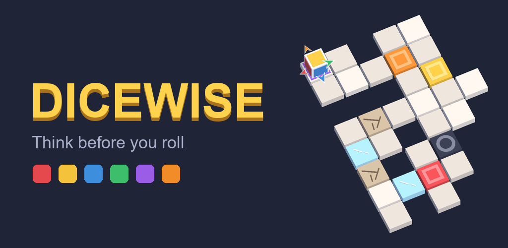
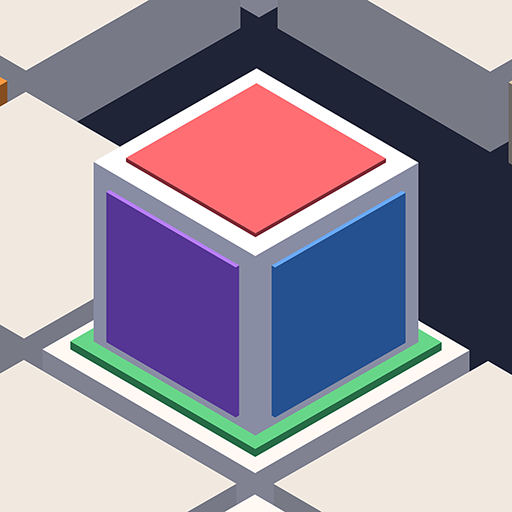
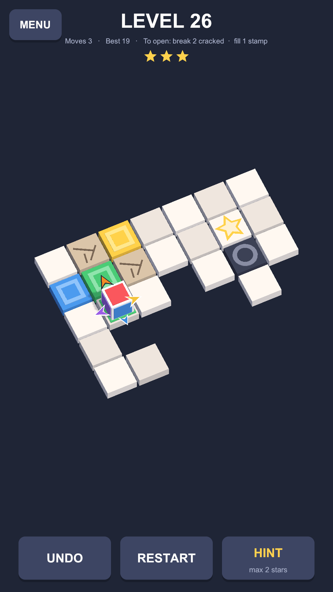
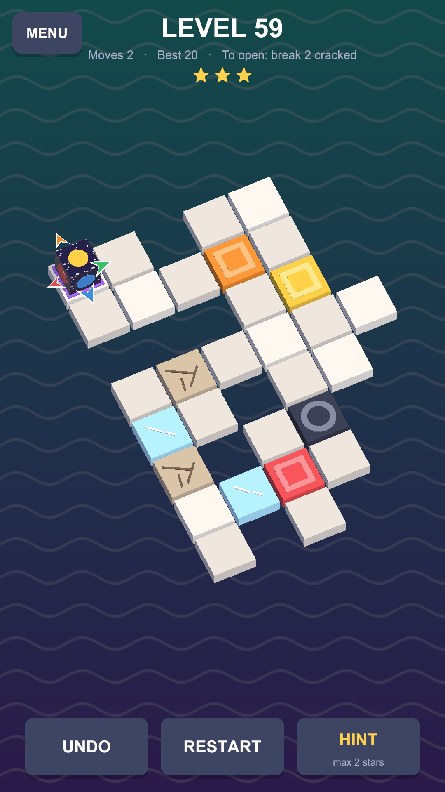
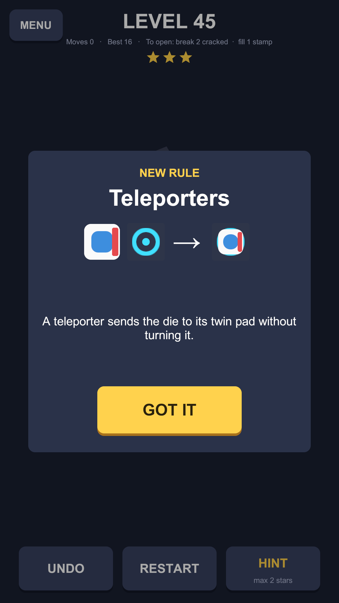
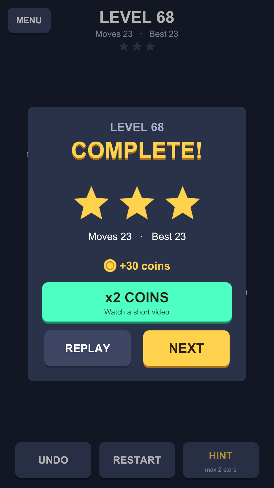
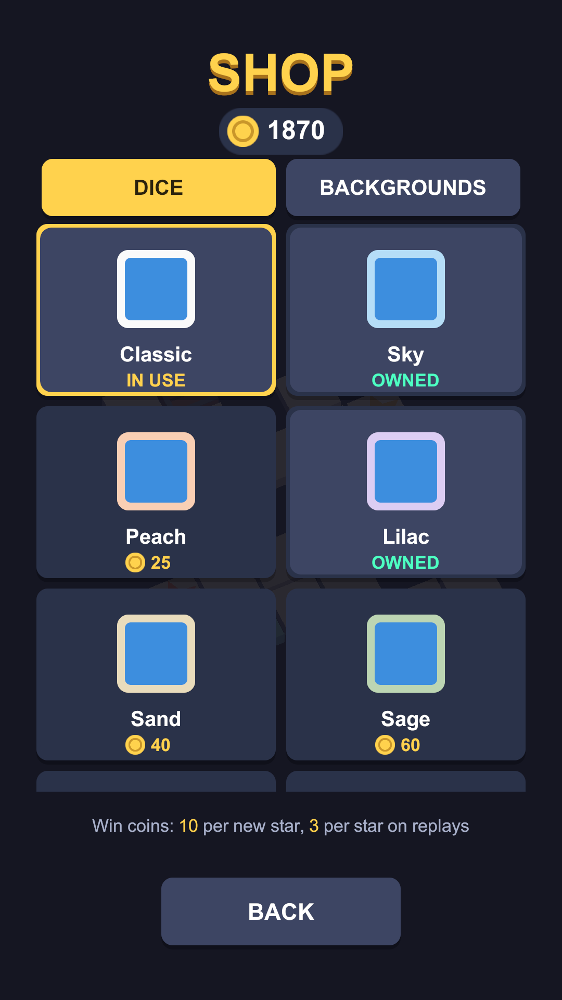
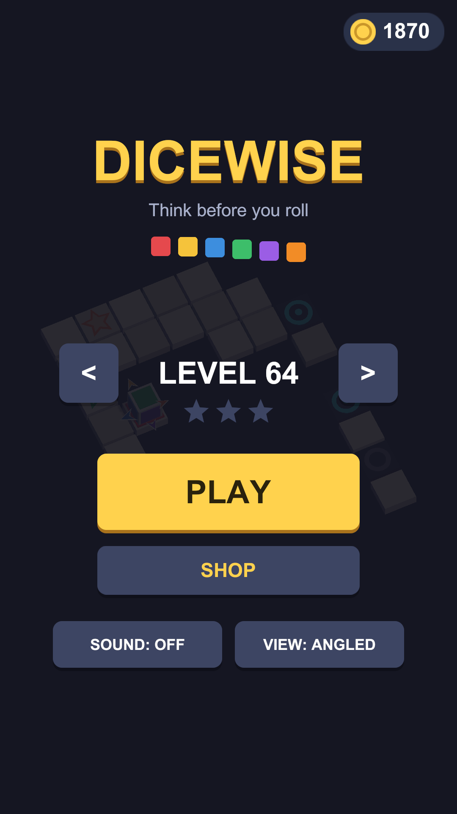

Dicewise
Roll the die to the goal. Every face matters in this calm logic puzzle.
Rueda el dado hasta la meta. En este puzle de lógica, cada cara cuenta.
01AboutEl juego
Dicewise is a puzzle game built on one simple idea: a die that rolls. Every roll tips the die onto a new face, so where you can go next depends on every move you made before. Plan your path, land the right color in the right place and reach the golden goal.
Dicewise es un juego de puzles con una idea sencilla: un dado que rueda. Cada movimiento vuelca el dado sobre una cara nueva, así que adónde puedes ir depende de todo lo que has hecho antes. Planea tu camino, pon el color adecuado en el sitio adecuado y llega a la meta dorada.






02FeaturesCaracterísticas
Think before you rollPiensa antes de rodar
- Swipe to roll the die across the board.
- Color tiles only accept the face of their own color.
- The board shows which face will land on each side.
- Undo is free. No lives, no timers, no rush.
- Desliza para hacer rodar el dado por el tablero.
- Las casillas de color solo aceptan la cara de su color.
- El tablero te muestra qué cara caerá en cada lado.
- Deshacer es gratis. Sin vidas, sin cronómetros, sin prisas.
New rules keep comingSiempre hay reglas nuevas
Cracked tiles that break behind you. Stamps to fill with the right color. Ice that sends the die sliding. Turntables, switches, bridges and teleporters. Each rule is introduced with a short card, then mixed with the ones you already know.
Casillas agrietadas que se rompen a tu paso. Sellos que llenar con el color correcto. Hielo que hace deslizar el dado. Plataformas giratorias, interruptores, puentes y teletransportes. Cada regla se presenta con una tarjeta breve y luego se mezcla con las que ya conoces.
Chase three starsConsigue las tres estrellas
Levels keep coming, each one checked to have a solution. Finish in the fewest moves to earn all three stars. Stuck? A hint shows you the next step, at the cost of a star.
Los niveles no se acaban, y todos tienen solución comprobada. Termina con el mínimo de movimientos para conseguir las tres estrellas. ¿Atascado? Una pista te muestra el siguiente paso, a cambio de una estrella.
Make it yoursHazlo tuyo
Earn coins as you play and spend them on more than 50 dice and backgrounds, from soft pastels to gold and diamond. Play offline, at your own pace.
Gana monedas jugando y gástalas en más de 50 dados y fondos, desde tonos pastel hasta oro y diamante. Juega sin conexión, a tu ritmo.